כניסה למסך הוספת מעסיק
נכנסים לתפריט המעסיקים ובוחרים בפקודת הוספה.
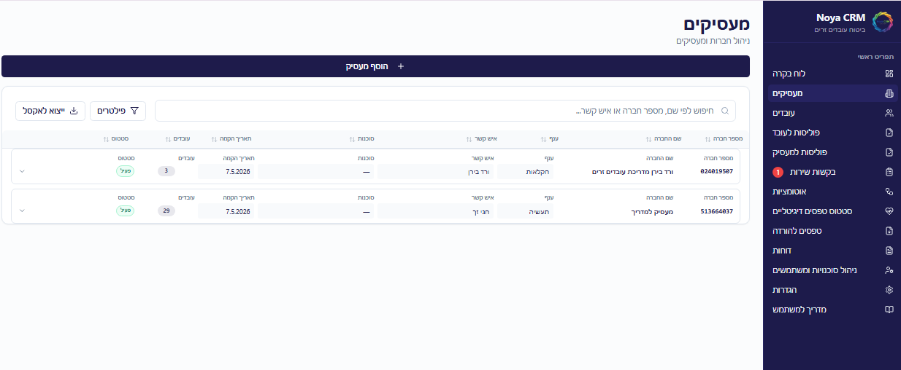
מדריך מקיף לניהול מחזור העבודה המלא: הוספת מעסיק חדש, הוספת עובד חדש עם הצהרת בריאות דיגיטלית, לוח בקרה, אוטומציות, פניות שירות מעסיקים וניהול דוחות.
נכנסים לתפריט המעסיקים ובוחרים בפקודת הוספה.

מזינים את כל נתוני המעסיק בצורה מלאה ומדויקת.
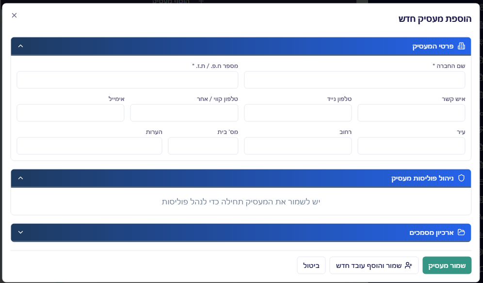
בודקים את הנתונים ולוחצים על כפתור השמירה הירוק.
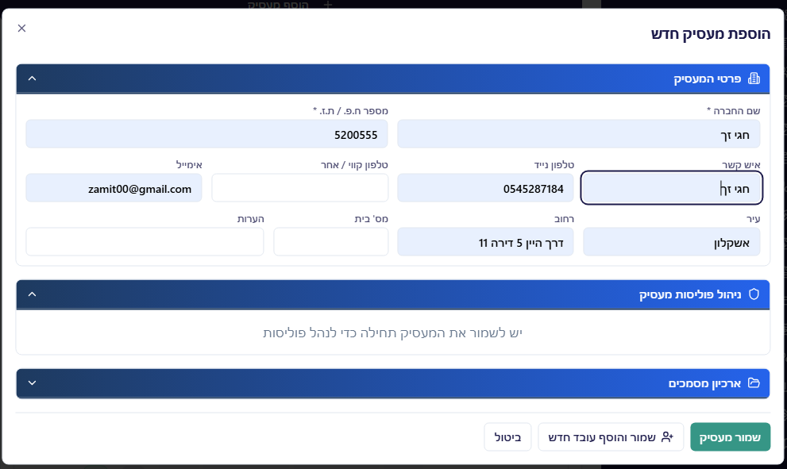
חשוב: שמירת המעסיק מעבירה אוטומטית למסך הקמת פוליסה עבור אותו מעסיק.
המערכת פותחת את מסך ההקמה של הפוליסה החדשה.
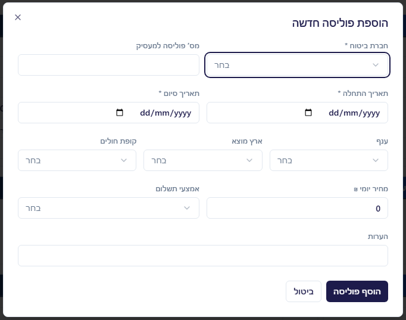
לאחר מילוי מלא, מאשרים באמצעות הכפתור הכחול.
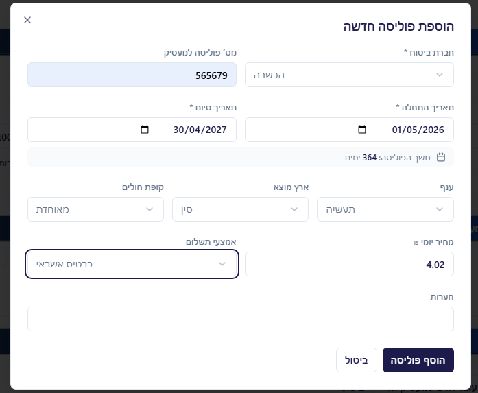
בודקים שהפוליסה מופיעה ומסומנת כפעילה.
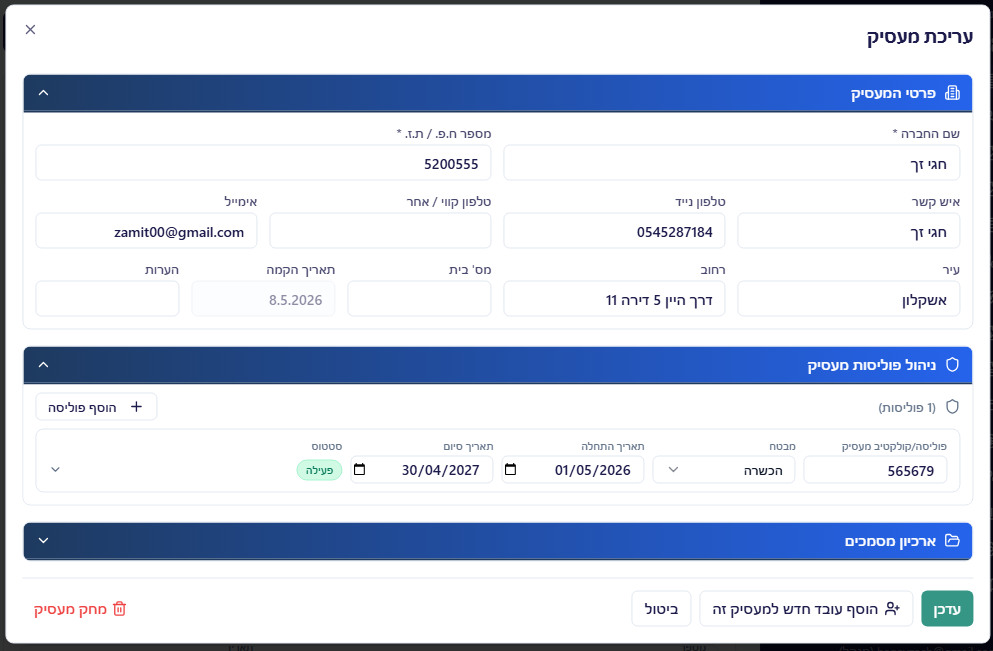
חוזרים לתפריט מעסיקים ומוודאים שהמעסיק החדש נוסף.
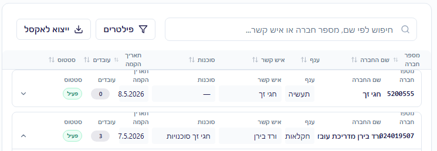
מאתרים את המעסיק הרלוונטי ולוחצים על עריכה.
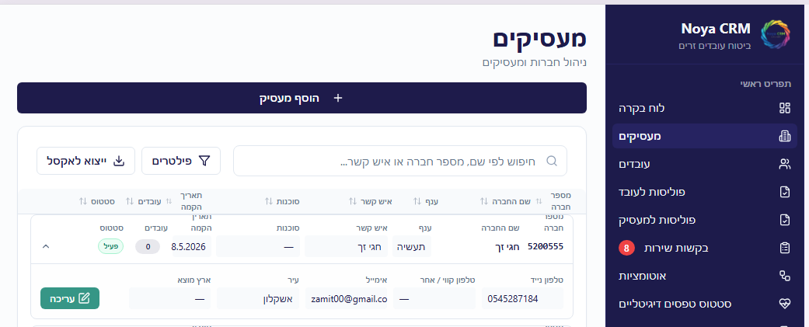
במסך המעסיק בוחרים בפעולת הוספת עובד חדש.

מזינים את נתוני העובד ושומרים את הרשומה.
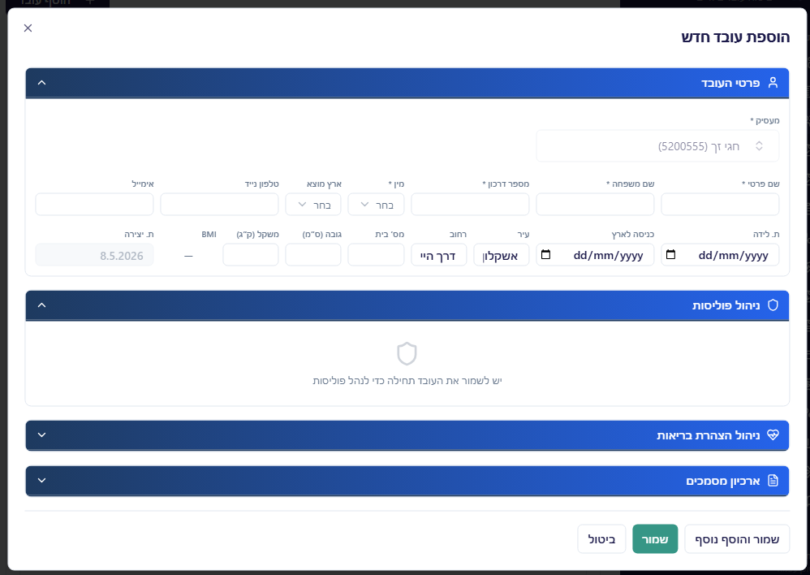
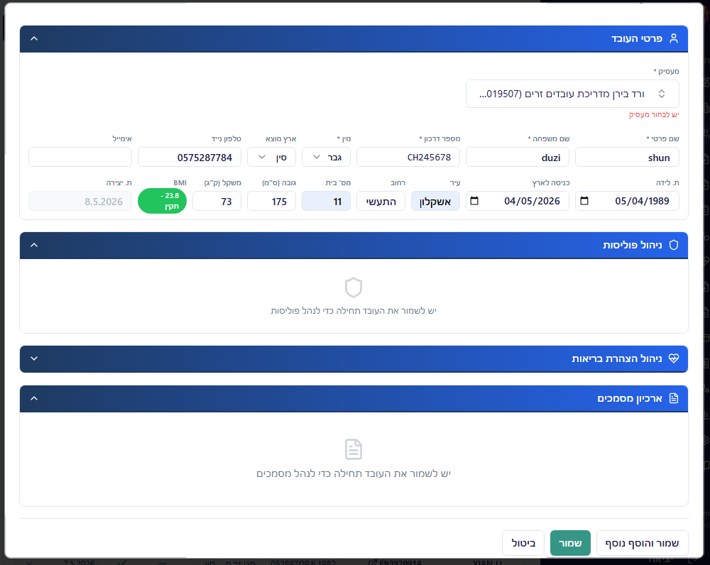
נכנסים לכרטיסייה הייעודית ומתחילים תהליך חתימה דיגיטלית.
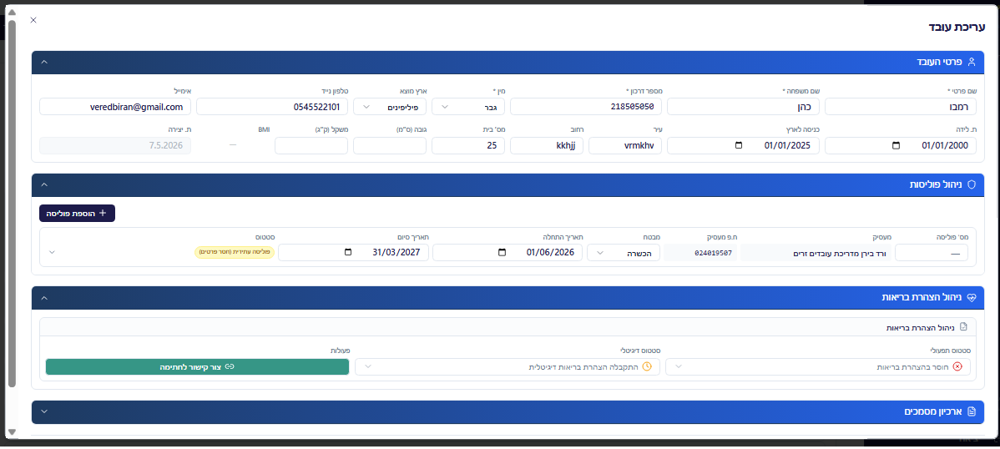
המערכת ממליצה אוטומטית, אך ניתן להחליף ידנית לפי צורך.
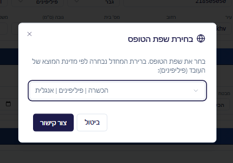
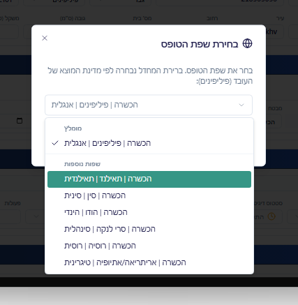
המערכת תומכת בשליחה במייל, בוואטסאפ או בשורת אקסל עם קישור.
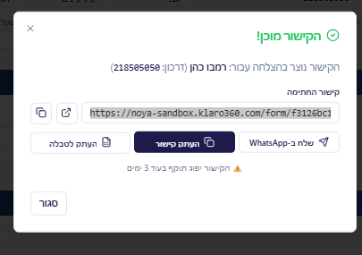
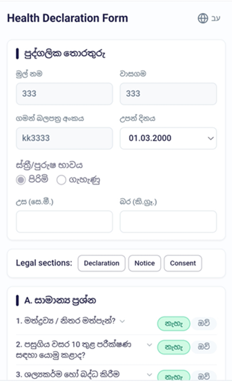
לאחר שליחת העובד מתקבל חיווי קליטה במערכת.
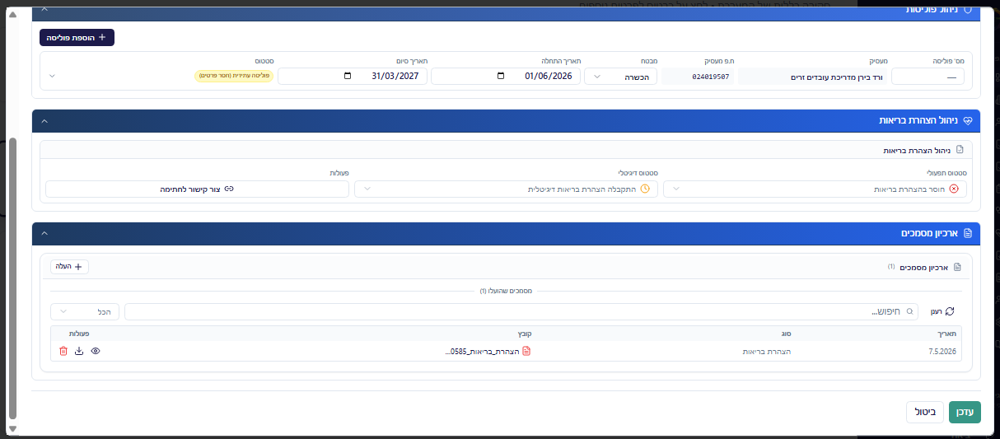
בודקים שהמסמך נשמר לזמינות צפייה והורדה.
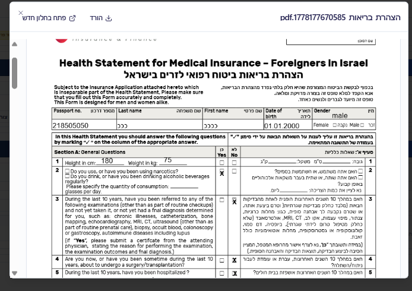
מגדירים סטטוס הצהרה תקינה ומפיקים אישור ביטוח וכרטיס קופת חולים.
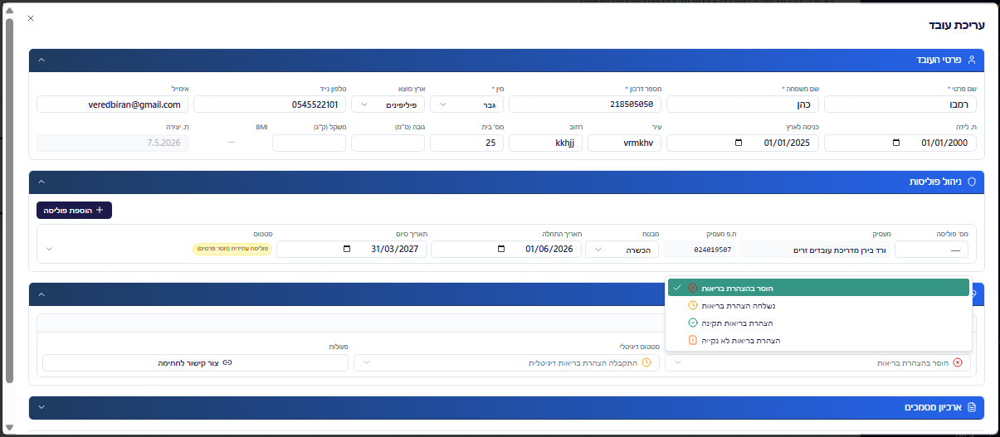
המשך תהליך: לאחר סטטוס תקין ניתן לעבור להפקת מסמכים דיגיטליים לעובד בהתאם להרשאות והגדרות המערכת.


לוח הבקרה הוא מסך הכניסה למערכת והוא מציג תמונת מצב מצרפית, כמותית ועדכנית. מהלוח ניתן לגשת ישירות לפעולות התפעוליות המרכזיות, ללא מעבר בין מסכים מרובי שלבים.
לוח הבקרה מתקדם המוצג מיד עם הכניסה למערכת, ובו כרטיסים מספריים מרכזיים.
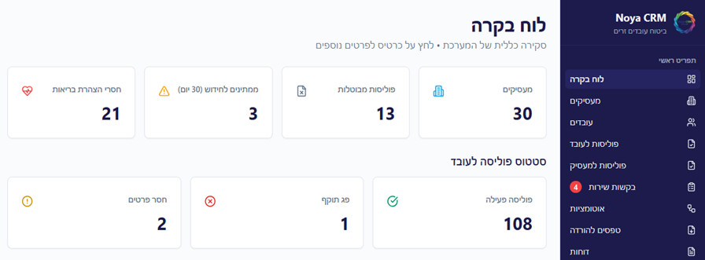
ייעוד הלוח: לאפשר למשתמש לקבל החלטות תפעוליות מהירות על בסיס תמונת מצב עדכנית, מבלי לעבור בין מסכים נפרדים או דוחות מורכבים.
כל כרטיס משמש כשער לדוח תפעולי מלא, הנפתח מתחת ללוח הבקרה.
לחיצה על כרטיס בלוח הבקרה פותחת דוח מפורט מתחת ללוח עצמו, הכולל את כל הרשומות המרכיבות את המדד שבכרטיס.
מתוך דוח זה ניתן:
• לסנן ולמקד נתונים (למשל לפי מעסיק, עובד, סטטוס).
• לערוך ולתקן נתונים חסרים.
• לטפל במשימות שוטפות כגון השלמת פרטים, חידוש פוליסות, או סגירת משימות פתוחות.
ניהול יום-יומי ישירות מלוח הבקרה, ללא ניווט עודף.
לוח הבקרה נבנה כך שהמשתמש יוכל לעבור מיד מתמונה כמותית לפעולה תפעולית:
תועלת תפעולית: ריכוז הנושאים הקריטיים בלוח אחד מקצר משמעותית את זמן הטיפול, מפחית טעויות, ומקל על בקרה שוטפת ברמת הארגון.
מודול האוטומציות מאפשר לנהל תהליכי הזנה ועדכון רחבים בצורה מהירה ומבוקרת: טעינת עובדים במסה, טעינת מעסיקים ופוליסות, עדכון נתוני עובדים במסה והפקת קבצי אקסל עם קישורים אוטומטיים להצהרות בריאות דיגיטליות.
בתפריט הראשי בוחרים את מודול האוטומציות.
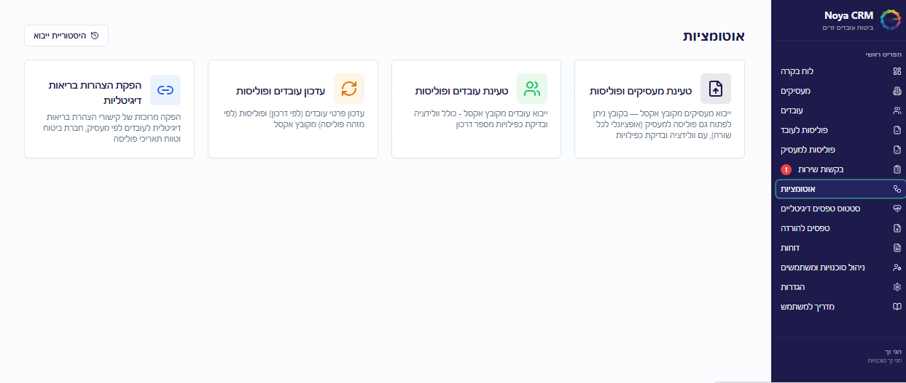
נבחר את אפשרות הטעינה ונראה שהתהליך בנוי משני שלבים ברורים.
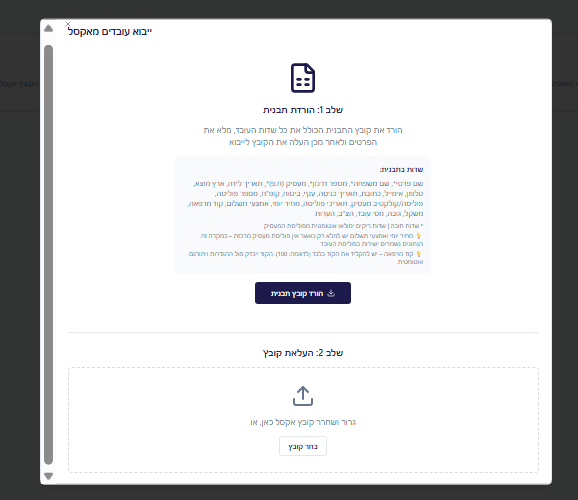
אם עדיין אין מבנה קובץ, מורידים תבנית ישירות מהמערכת.
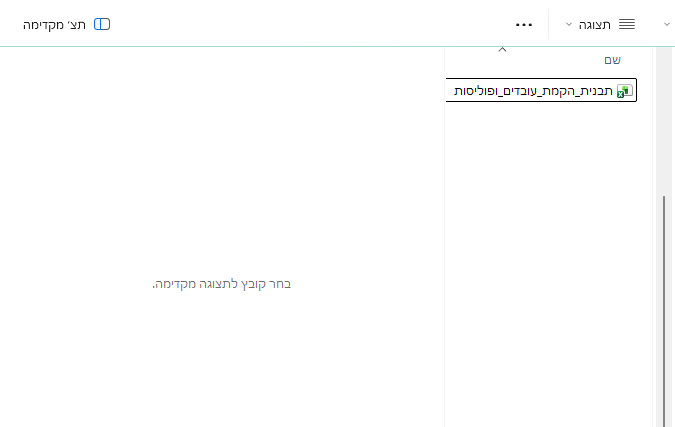
פותחים את גיליון העבודה ומשלימים נתונים לפי ההנחיות.
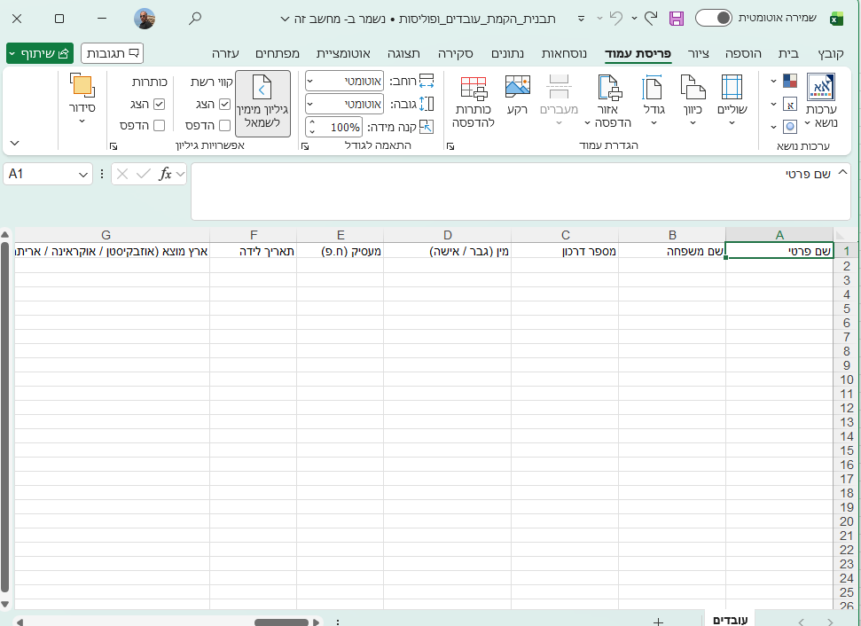
מעלים את הקובץ המלא ומתחילים את תהליך הטעינה.
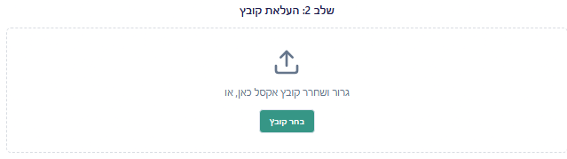
הערה חשובה: טעינת מעסיקים ועדכון עובדים/פוליסות הם תהליכים דומים, אך עם מבנה קובץ אחר. יש לפעול לפי ההוראות המופיעות בכל מסך תהליך.
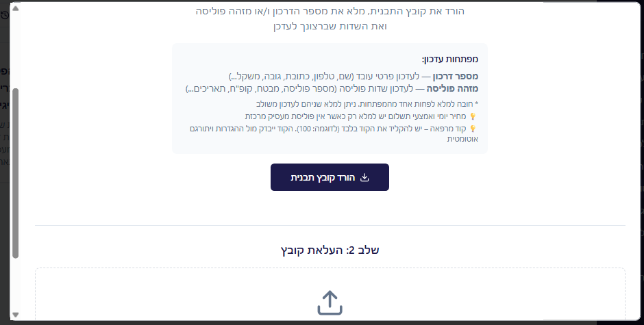
הפקת אקסל עובדים עם קישורים אוטומטיים להצהרות בריאות.
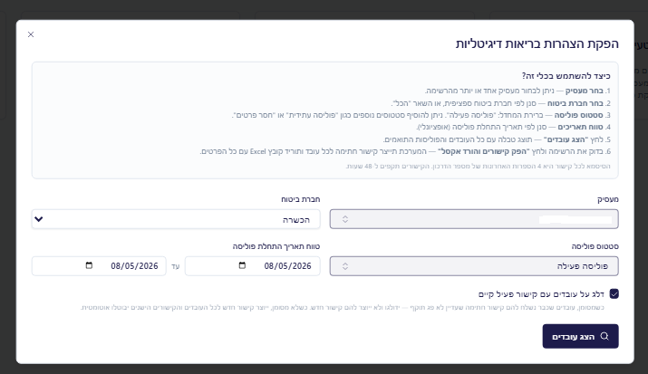
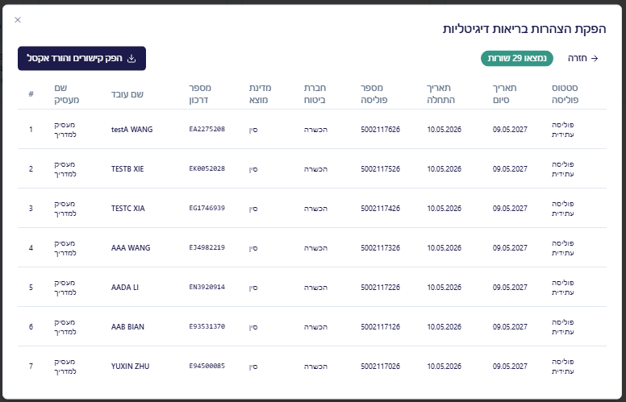
תוצאה: מתקבל תהליך עבודה מהיר ואחיד שמאפשר הפצה מבוקרת של הצהרות בריאות דיגיטליות לקבוצות עובדים גדולות.
מודול פניות המעסיקים מרכז את כלל בקשות השירות, כולל יכולת סינון, צפייה, טיפול ועדכון סטטוס. ניתן גם לייצא את נתוני המסך לקובץ אקסל לצורך בקרה ותיעוד.
מהתפריט הראשי בוחרים בקשות שירות ונכנסים למסך פניות מעסיקים.
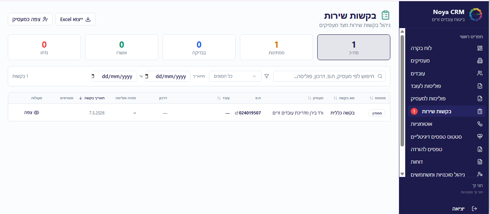
המסך מחולק ללוח בקרה, אזור סינונים ואזור תוצאות.
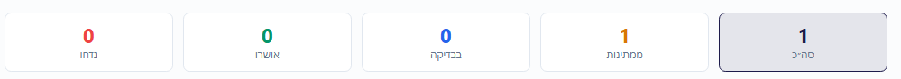
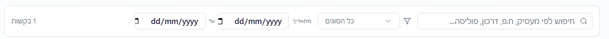
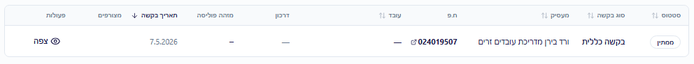
נכנסים לפרטי הפנייה דרך אייקון העין ומעדכנים תוצאת טיפול.
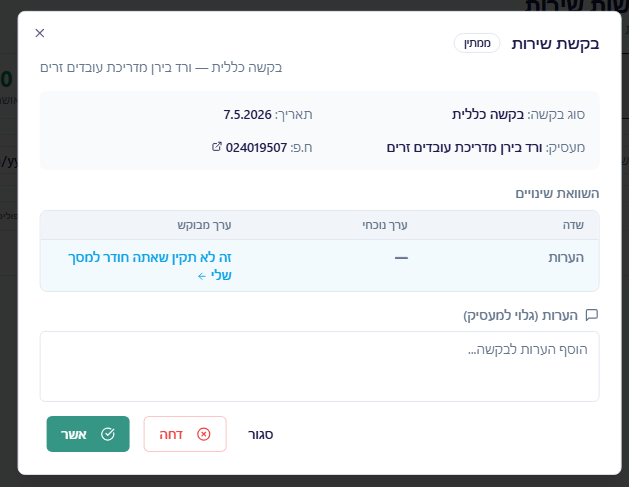
המלצה תפעולית: בעת עדכון סטטוס, מומלץ לוודא שהערות הטיפול מלאות ומדויקות כדי לשמור על רצף תיעוד ושקיפות מול המעסיק.
המערכת תומכת במספר סוגי בקשה, בהתאם לתהליכי השירות בארגון.
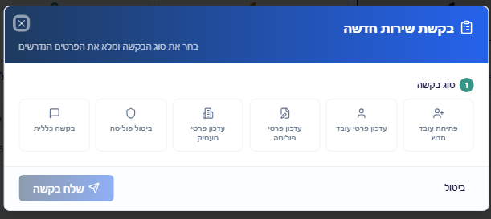
מסך הדוחות מאפשר לצפות בדוחות שהופקו בעבר, לייצר דוח חדש לפי סינונים מתקדמים, לבצע עריכה או מחיקה של דוח קיים, ולייצא תוצאות לקובץ אקסל.
מהתפריט הראשי נכנסים לאזור הדוחות.
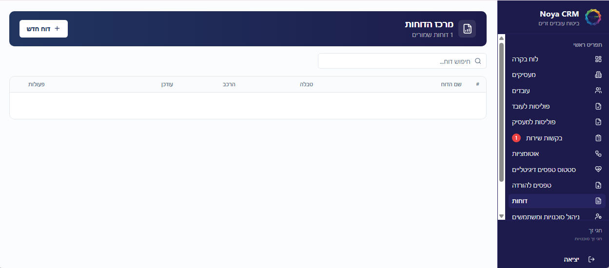
ניתן לערוך או למחוק כל דוח שכבר הופק.
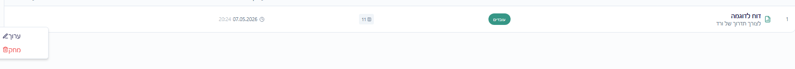
נלחץ על כפתור דוח חדש ונפתח מסך הגדרות הדוח.
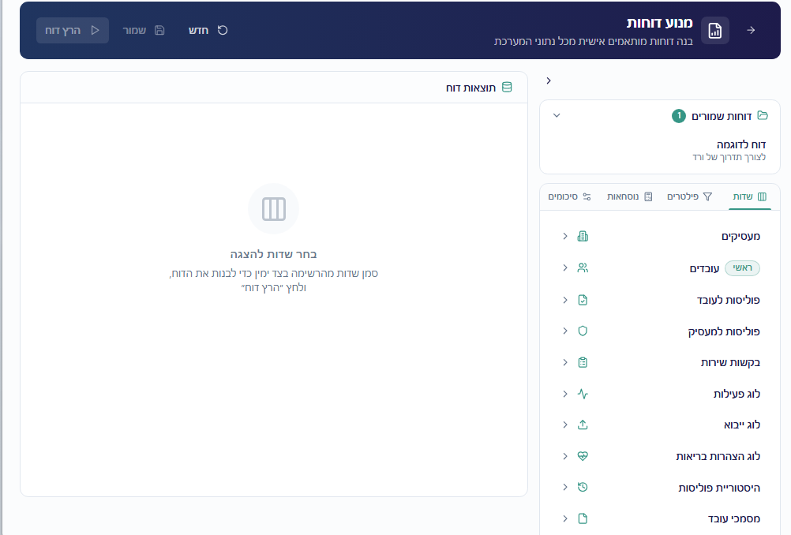
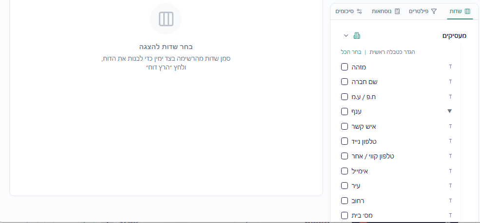
לאחר יצירה ניתן להפיק קובץ אקסל של הדוח.
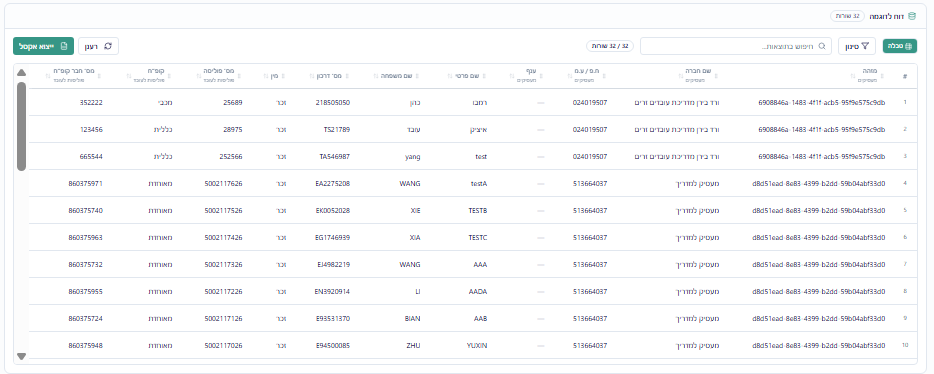
בחזרה למסך הדוחות נראה שהדוח החדש נוסף.
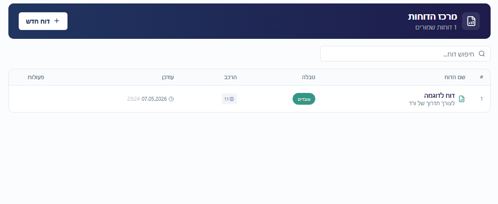
סיכום: תהליך העבודה בדוחות כולל יצירה, בחירת פרמטרים, ייצוא וניהול שוטף של דוחות קיימים מאותו מסך מרכזי.